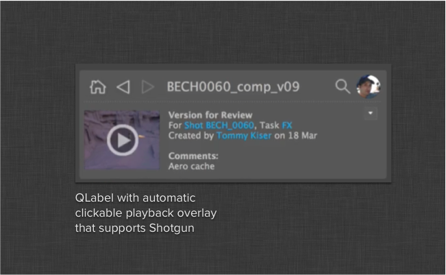

Shotgun Version Playback Widget¶
-
class
version_label.VersionLabel(parent)[source]¶ Subclassed QLabel that displays a playback icon centered above the existing pixmap.
By populating an instance with shotgun version data via the set_shotgun_data() method, the version label will look at the data and determine whether a playback icon should be displayed or not. In the case an icon is displayed, a playback_clicked signal may be emitted.
This signal passes the same shotgun version data back to the caller.
Constructor
Parameters: parent – QT parent object